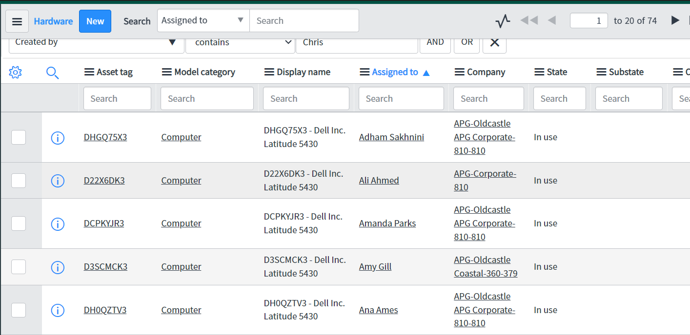

-

IT ServiceDesk
Primary objective – The main goal of our ServiceDesk is to provide IT support services for all Oldcastle APG employees. Help desk employees complete tickets that have been assigned to them, as well as, log and enter a ticket for anything IT support related that they completed. Through this goal we have seen a reduction in incidents within the company as a whole and have cut down on IT related issues.
Experience – Having never used or even heard of SNOW, I took some beginner courses. Through this, I gained the ability to navigate within SNOW and some confidence in my ability within the environment. With great mentors, I learned how to handle tickets, appropriate protocols, set up new employee workstations, and many different tips on how to handle the IT support side of Oldcastle APG. It was great and insightful to see how far an IT helpdesk has come.
Pictures


Shoutouts – Tammy, Nicole, David
-
ServiceNow
Primary objective – Overarching support system for Oldcastle APG IT support employees. Provides the ability to efficiently track and serve employees with IT problems. Stores and visualizes data in a way that we can reduce issues and monitor performance of the department. The development of SNOW is to better provide the tools necessary for IT ServiceDesk employees to be able to do their job effectively. One example of this is the implementation of the Knowledge Base (KB) Articles. The knowledge base that saves and facilitates information about how to solve different IT support problems. This aspect is growing and it is cool to see it gradually become a vital resource.
Experience – Worked briefly with Katherine to do some User-Acceptance-Testing (UAT). Her teams task is the development of ServiceNow. Unfortunately didn’t get to do too much testing but it was a great experience to see the QA side of the development of ServiceNow. Also learned Raymond's role and how he manages the tickets that come in and keeps his team on top of them. The dashboards and metrics that he uses to maintain the high quality we have was an eye-opener.
Pictures

Areas of Improvement – ServiceNow is on the right track, however, some small improvement measures would be a great touch. The help desk location on the employee website homepage should be made with ease-of-use in mind. I ran into a quite a few employees who had no idea how to enter a ticket or where the help desk link even was. This can slow down support services and makes the jobs of Tammy/David more difficult as they are often relied upon as employees will forgo using the service and instead rely on them. Make the help desk site easier to get too and provide sufficient employee training on how to submit a ticket and how to track your ticket. The suggestions I've heard to help prevent this are training during onboarding that shows how to do this. Maybe a short video, knowledge base printed out on paper, or many other solutions.
Shoutouts – Mamadou, Raymond, Katherine
-

Asset Management
Primary objective – Keep track of the hardware assets of Oldcastle. The goal at the moment was to track the laptops and tablets then transition to eventually having all hardware assets tracked within SNOW.
Experience – Whenever I had some free time Nicole had me work with Matt’s team in Asset Management. We would go through and verify System Center Configuration Manager (SCCM) data and match it up with the user. Then transfer this information over to the new procurement sheet. Once everything was confirmed, I would input tags into SNOW and assign a new hardware asset (Make, Model, etc.) to that specific user. This may seem simple, but up until now there have been a large portion of errors (Assigned to, Location, and Model Numbers) along with very minimal tracking. It was a great experience to see how we can better track and verify where all of our hardware assets are.
Pictures
Procurement Sheet:
Locations:

Hardware Assets:

My SNOW Inputs:

Areas of Improvement – Sometimes the wrong information is in SCCM. Locations spreadsheet is very difficult to read considering we have so many locations and sites. When it comes to tracking assets, it is important to effectively track employee roles, locations, titles, etc.
Shoutouts – Matt, Allen, Nick
-

M3 Software Development
-
Overall Reflection